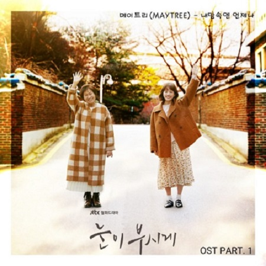
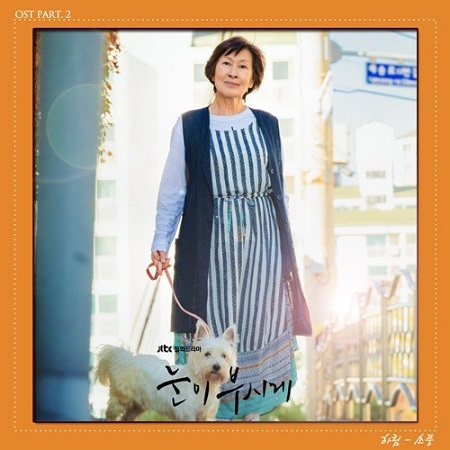

OST Part 1
|  | |
| OST Part 1 내 맘속엔 언제나 소프라노 : 임수연 , 알토 : 강수경, 테너 : 권영훈 베이스 : 김원종, 보컬 퍼커션 : 장상인 5인조가 아카펠라 그룹이 만들어낸 그들만의 사운드를 감상해보자! |
|
| 1. 메이트리 (Maytree) – 내맘속엔 언제나
2.메이트리(Maytree) – 내맘속엔 언제나 INST |
|
OST Part 2
|  | |
| OST Part 2 소풍 김형석 작곡가의 아름다운 피아노 선율과 감미로운 하림의 목소리로 담백한 사운드를 만들어내며 ‘눈이 부시게' 를 귀로 들려주는데.. 드라마와 함께 아름다운 시간여행을 떠나보자 |
|
| 1. 하림 - 소풍 | |
OST Part 3
| OST Part 3 I Just Set It Up 노래만 들어서는 여느 아이돌 팝 으로 여길 수도 있겠지만 드라마의 절묘한 장면에 함께 어우러질 빈센트의 "I Just Set It Up" 드라마를 통해 확인 하도록 하자. |
|
| 1. 빈센트 – I Just Set It Up
2. 빈센트 – I Just Set It Up INST |
|
OST Part 4
| OST Part 4 눈부신 날들 ‘남새라'의 맑고 청초한 보이스와 러브시티만의 따뜻하고 아름다운 감성이 만나, 어떤 시너지를 발휘할지 기대해보자! |
|
| 1. 남새라 – 눈부신 날들
2. 남새라 – 눈부신 날들 INST |
|
OST Part 5
| OST Part 5 따스해져 곡을 듣는 순간 가창을 결정했을 만큼 드라마의 내용을 읽어주는 듯한 아름답고 따스한 곡이라는 후문이 있을 만큼 음악을 들으며, 드라마의 분위기로 스며들어 그 감동을 확인해 보는 것을 추천! |
|
| 1. 장덕철 – 따스해져
2. 장덕철 – 따스해져 INST |
|
OST Part 6
| OST Part 6 물감 변함없는 파워 뿐만 아니라, 조금 더 디테일해진 감정선을 이끌어내는 김연지의 다채로운 보컬에 초점을 맞춰 들어보는 것이 흥미로울 것이라고 생각된다. |
|
| 1. 김연지 (씨야) – 물감
2. 김연지 (씨야) – 물감 INST |
|